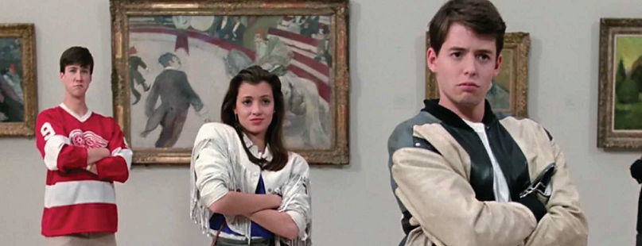
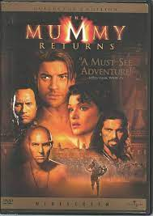

A trouble student skips school with his girlfriend and best friend for a day down town while all of them try to avoid getting caught.
This series follows a pirate wanted for his crimes in the pursuit of treasures along with enemy/ally.
This series follows two explorers who are searching for ancient treasure and accidentally release the evil mummies from their tombs.
This is a clip from one of my favorite scenes from the movie Ferris Buellers Day Off.